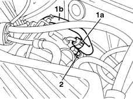
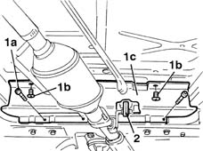
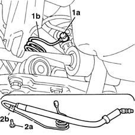
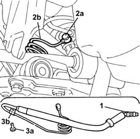

4130B41 outlet pipe from pump to power steering case r r for right hand drive versions
- Path
- Procedures > 41 STEERING > 4130 POWER ASSISTED STEERING > 4130B power steering hydraulic sytem > 4130B41 outlet pipe from pump to power steering case r r for right hand drive versions
- Kind
- repair procedure (removal / refitting; the operation number is the code)
- Applies to
- all engines; all production periods
- Interactive page
- https://sloeber94.github.io/elrnDB-fMltpl/en/#/2891698
Applies to: engines: 1.6 16v; all production periods; only with equipment: Right hand drive
 Removing
Removing
 Refitting
RefittingPlace the vehicle on a lift and position a suitable container for collecting the fluid.
Drain the fluid from the power assisted steering fluid reservoir using a syringe.
1. Open the band (1a) and disconnect the pipe (1b) between the reservoir and the pump from the pump.
2. Undo the connector from the power steering pump.

Applies to: engines: 1.6 16v; all production periods; only with equipment: Right hand drive
Raise the car.
1. Undo the fixing bolts (1a) and the clips (1b) for the lower cover (1c).
2. Release the rubber fastening for the exhaust pipe and remove the cover.

Applies to: engines: 1.6 16v; all production periods; only with equipment: Right hand drive
1. Undo the connector (1a) fixing the pipe (1b) to the power assisted steering box.
2. Undo the bolt (2a) for the plate (2b) fixed to the bodyshell and remove the supply pipe.

Applies to: engines: 1.6 16v; all production periods; only with equipment: Right hand drive
Refitting
RemovingPosition the pipe.
Tighten the connector fastening the pipe to the power assisted steering box.
 | Fastening | Component | Ø | Value (daNm) |
|---|---|---|---|---|
- | Connector | PIPE BTWN PUMP + POWER STEERING BOX | M14 x 1.5 | (Power steering side) 3 |
Tighten the bolt fixing the plate.
Position the lower cover and tighten the fastenings.
Lower the car.
Tighten the connector fastening the pipe to the power assisted steering pump.
| Fastening | Component | Ø | Value (daNm) |
|---|---|---|---|---|
- | Connector | PIPE BTWN PUMP + POWER STEERING BOX | M12 | (Pump side) 3.6 |
4130B14 Power assisted steering fluid reservoir CAP - R.R. - Check level and top up if necessary.
Applies to: engines: 1.9 JTD 8V; all production periods; only with equipment: Right hand drive
Removing
RefittingPlace the vehicle on a lift and position a suitable container for collecting the fluid.
1016A10 sound-proofing cover - r + r
Drain the fluid from the power assisted steering fluid reservoir using a syringe.
Raise the car.
7055B54 under-engine guard - r r
1. Undo the fixing bolts (1a) and the clips (1b) for the lower cover (1c).
2. Release the rubber fastening for the exhaust pipe and remove the cover.
Applies to: engines: 1.9 JTD 8V; all production periods; only with equipment: Right hand drive
Lower the lift.
1. Undo the supply pipe connector from the power assisted steering pump.
Raise the lift.
2. Undo the connector (2a) fastening the pipe (2b) to the power assisted steering box.
3. Undo the bolt (3a) for the plate (3b) fastened to the bodyshell and remove the supply pipe.

Applies to: engines: 1.9 JTD 8V; all production periods; only with equipment: Right hand drive
Refitting
RemovingPosition the pipe.
Tighten the connector fastening the pipe to the power assisted steering box.
| Fastening | Component | Ø | Value (daNm) |
|---|---|---|---|---|
- | Connector | PIPE BTWN PUMP + POWER STEERING BOX | M14 x 1.5 | (Power steering side) 3 |
Tighten the bolt fixing the plate.
Position the lower cover and tighten the fastenings.
7055B54 under-engine guard - r r
Lower the vehicle
Tighten the connector securing the pipe to the power assisted steering pump.
| Fastening | Component | Ø | Value (daNm) |
|---|---|---|---|---|
- | Connector | PIPE BTWN PUMP + POWER STEERING BOX | M12 | (Pump side) 3.6 |
4130B14 Power assisted steering fluid reservoir CAP - R.R. - Check level and top up if necessary.